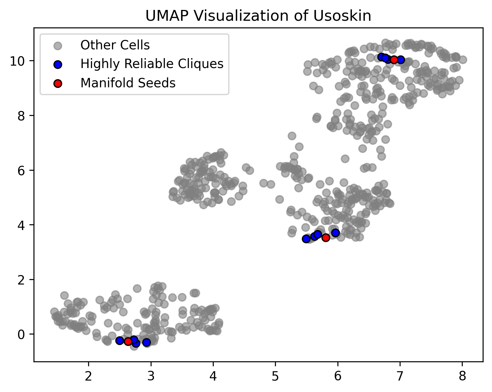
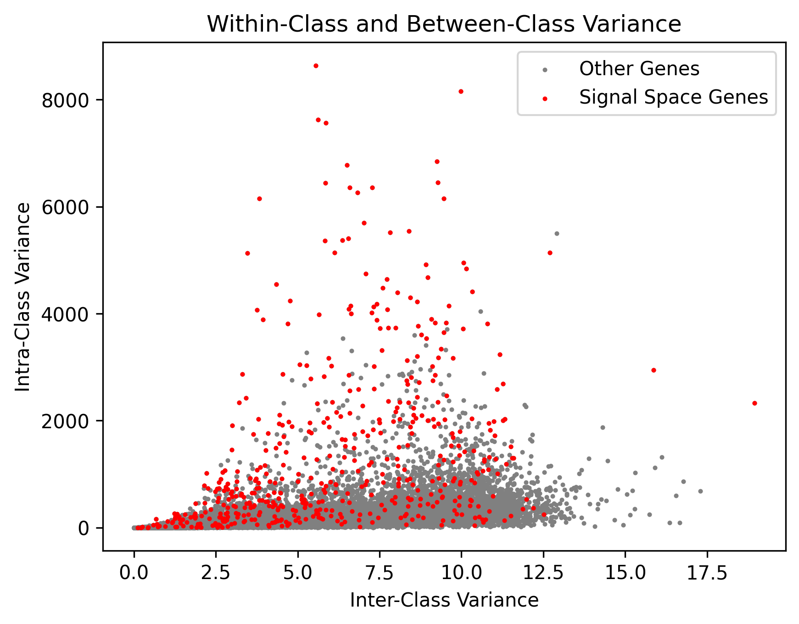
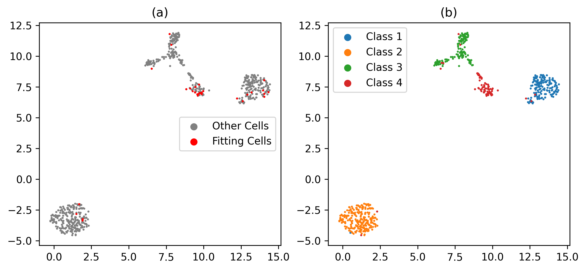
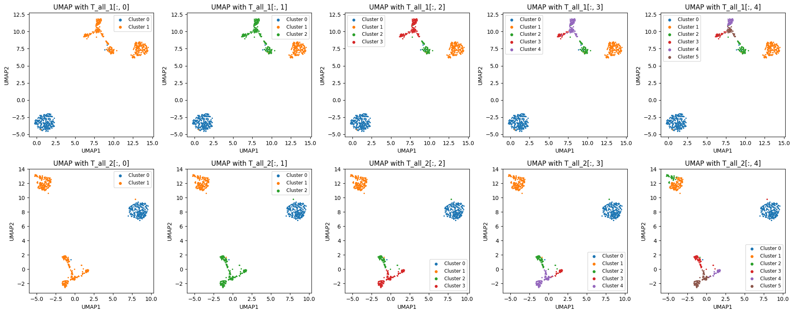
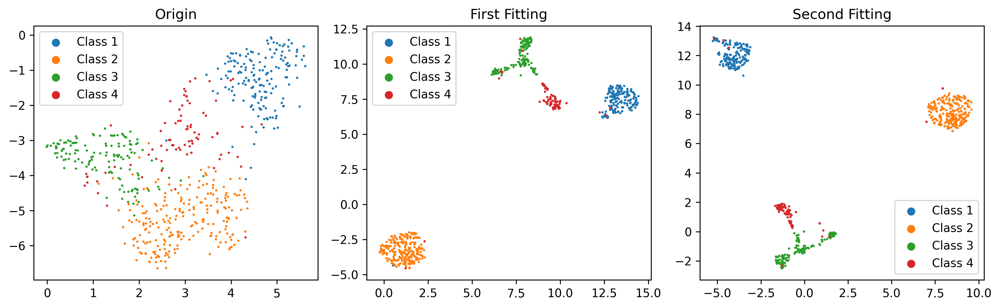

Manifold Fitting and Clustering
This dataset contains 622 cells from the GSE59739 dataset, derived from the mouse lumbar dorsal root ganglion. For more details, refer to the description. It is available for free download in txt.gz format from the GEO database via this link: Download Link. You can also directly obtain the data from the Test Data folder in CellScope’s GitHub repository.
Data Reading
Load the gene expression matrix and cell type labels using loadmat. (If cell type labels are unavailable, it won’t affect the subsequent analysis).
from scipy.io import loadmat
import CellScope
data_name = 'GSE59739.mat'
Data = loadmat(data_name)
fea_raw = Data['fea_raw']
cell_type = Data['label_1_numr']
Normalization
Data normalization should be performed before downstream analysis.
fea_raw, fea_log, fea = CellScope.cs.Normalization(fea_raw)
Manifold Fitting Step 1
Inspired by the Density Peaks Clustering (DPC) algorithm [RL14], Manifold Fitting Step 1 automatically identifies category centers (referred to as manifold seeds) and finds highly reliable cliques. Based on these highly reliable cliques, gene selection is performed to obtain a low-noise Signal Space.
fea_Fitting_1, Signal_Space, Center_index = CellScope.cs.Manifold_Fitting_1(
fea, num_pca=100, num_Selected_Gene=500, knn=20, num_center=0)
The Manifold seeds and Highly Reliable Cliques identified in CellScope provide us with high-confidence pseudo-labels.
The genes identified by CellScope often exhibit high inter-class variance and low intra-class variance, aligning well with the true labels.
Manifold Fitting Step 2
fea_Fitting_2, fitting_index, index_after_outlier_removal = CellScope.cs.Manifold_Fitting_2(
fea_Fitting_1, num_neighbor=5, fitting_prop=0.05, coeff=0.1, op_Outlier=False)
The candidate cells for the second manifold fitting in CellScope include misclassified cells from the first manifold fitting step. For instance, we visualized the UMAP result after the first manifold fitting, as shown in Figure b, with cells colored by the golden label. Some cells from class 4 were misclassified into the other three classes. These misclassified cells were selected for the second manifold fitting step to further remove noise.
Manifold Embedding in Graph and Clustering
T_all_1 = CellScope.cs.GraphCluster(fea_Fitting_1, metric=None, num_cell_thre=100000, index=[])
T_all_2 = CellScope.cs.GraphCluster(fea_Fitting_2, metric=None, num_cell_thre=100000, index=[])
Calculate the Clustering Accuracy (ACC,NMI,ARI,F1-Score,JI)
pred_label = T_all_1[:,3].reshape(-1)
true_label = Data['label_1_numr'].reshape(-1)
metric_results = CellScope.cm.calculate_metrics(true_label,pred_label)
print("Clustering Metrics Results:")
print("-" * 30)
for metric, score in metric_results.items():
print(f"{metric: <20}: {score:.2f}")
print("-" * 30)
Clustering Metrics Results:
------------------------------
Accuracy : 0.92
NMI : 0.88
ARI : 0.90
F1 Score : 0.94
Jaccard : 0.85
------------------------------
Visualization
Y_1 = CellScope.cs.Visualization(fea_Fitting_1, Visualization_Method="UMAP")
Y_2 = CellScope.cs.Visualization(fea_Fitting_2, Visualization_Method="UMAP")
We can demonstrate the hierarchical clustering process through visualization results.
CellScope compared the visualization results of the raw data, the first manifold fitting, and the second manifold fitting. The first manifold fitting increased inter-class differences, resulting in a clearer clustering structure, while the second manifold fitting further adjusted misclassified cells, leading to more biologically accurate results.
